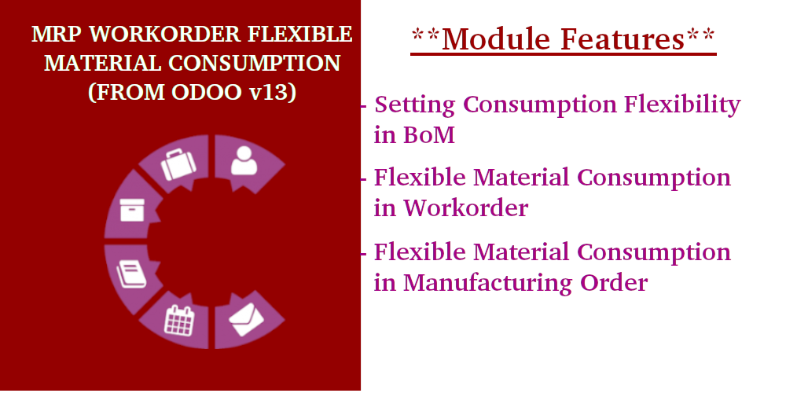
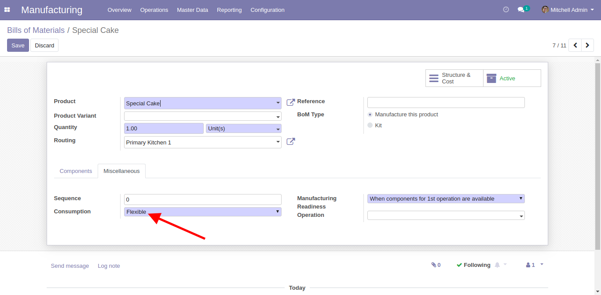
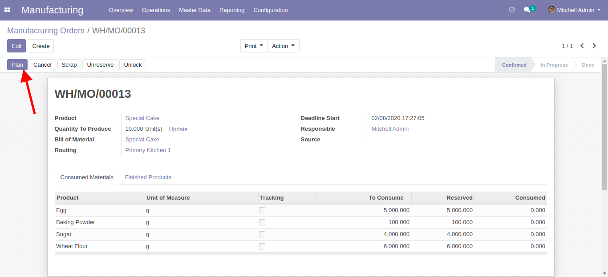
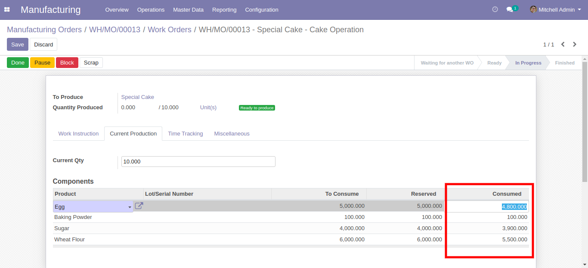
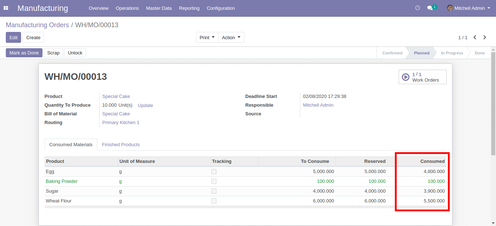
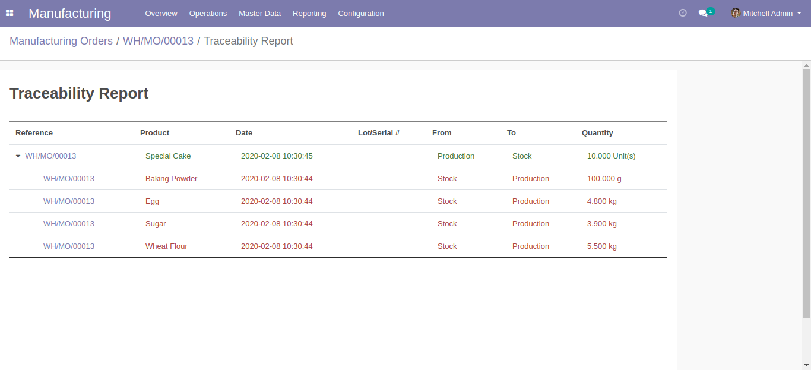

<section class="oe_container"
         style="padding: 5% 0 2% 5%; background: #7f7fd5; background: linear-gradient(to right, #ff7b3b, #ff0000, #c10000);">
  <div class="row oe_spaced">
    <div class="col-5">
      
    </div>
    <div class="col-7">
      <h2 class="oe_slogan"
          style="font-size: 35px;color: #fff;font-weight: 900;text-transform: uppercase;text-align: left;margin: 0;margin-bottom: 16px;">
        MRP Workorder Flexible Material Consumption.
      </h2>
      <h3 class="oe_slogan"
          style="font-size: 25px;color: #fff;font-weight: 600;text-align: left;opacity: 1;margin: 0 !important;">
        Allow user to set flexible material consumption in Workorder and Manufacturing Order
      </h3>
      <h5 class="oe_slogan"
          style="text-align: left; width: 334px; opacity: 1 !important;">
        <a style="line-height: 32px; display: inline-block; border-radius: 50px; letter-spacing: 2px; font-weight: 900; font-size: 16px; padding: 12px 40px; background: rgba(72,44,191,1); color: #fff;">ANTech Software</a>
      </h5>
    </div>
  </div>
</section>
<section class="oe_container" style="padding: 5% 0 2% 5%;">
  <div class="row">
    <div class="col-xs-12 col-sm-6">
      <div class="page-title">
        <h5 style="font-size: 14px; margin: 0 0 15px; line-height: 1.4em; text-transform: uppercase; letter-spacing: 1.5px; color: #8790af;">
          Overview</h5>
        <h3 style="margin: 0 0 15px; font-weight: 400; line-height: 1.4em; font-size: 32px; color: #434345;">MRP Workorder Flexible Material Consumption.</h3>
      </div>
<!--      <div style="font-size: 16px; line-height: 32px; color: #8790af;">-->
<!--        <p>Overview content</p>-->
<!--      </div>-->
    </div>
  </div>
</section>
<section class="oe_container"
         style="padding: 2% 5% 2% 5%; background: #7F7FD5; background: linear-gradient(to left, #ff7b3b, #ff0000, #c10000);">
  <div class="oe_row oe_spaced">
    <ul>
      <li><h4>Material Consumption Configuration in Bills of Materials.</h4></li>
    </ul>
    
  </div>
  <div class="oe_row oe_spaced">
    <ul>
      <li><h4>Button Plan in Manufacturing Order to Create Workorder.</h4></li>
    </ul>
    
  </div>
  <div class="oe_row oe_spaced">
    <ul>
      <li><h4>Input consumed material in Workorder.</h4></li>
    </ul>
    
  </div>
  <div class="oe_row oe_spaced">
    <ul>
      <li><h4>Consumed material in MO based on Workorder.</h4></li>
    </ul>
    
  </div>
  <div class="oe_row oe_spaced">
    <ul>
      <li><h4>Tracebility report after Manufacturing Order done.</h4></li>
    </ul>
    
  </div>
</section>